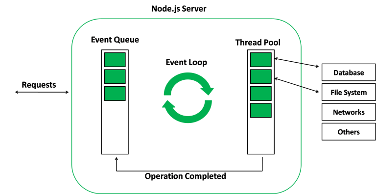
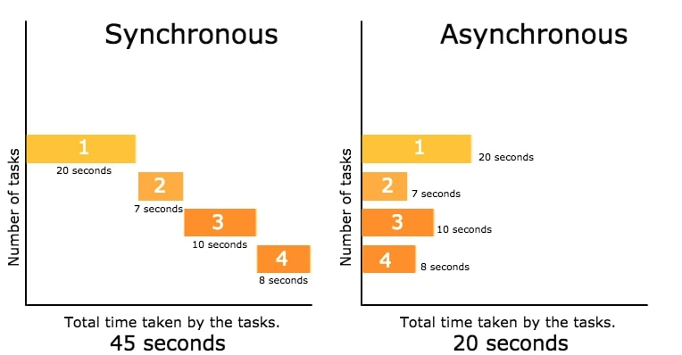
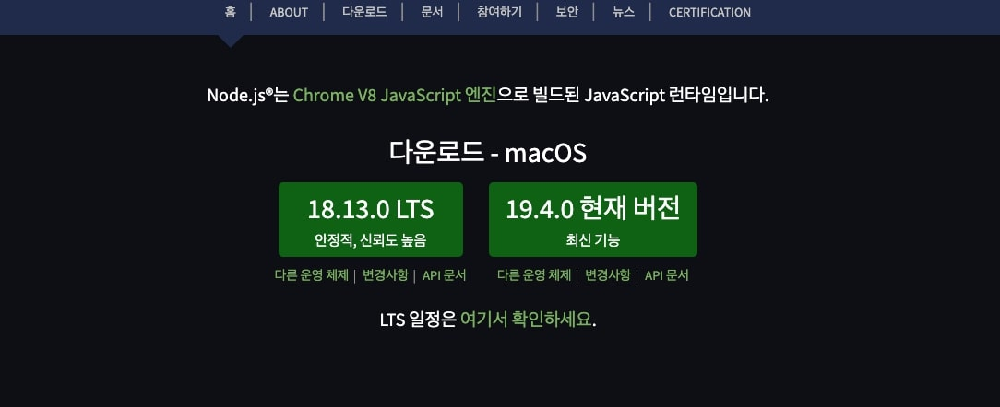
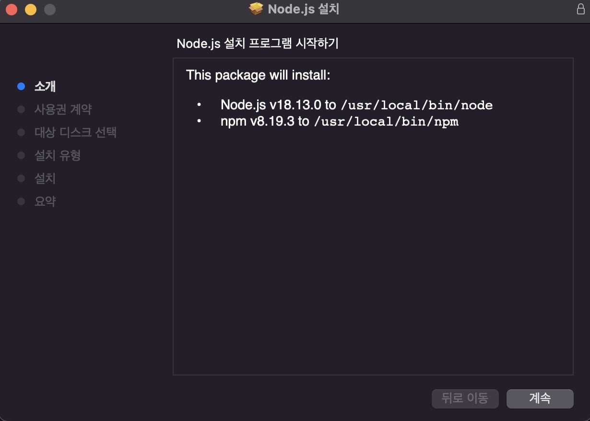
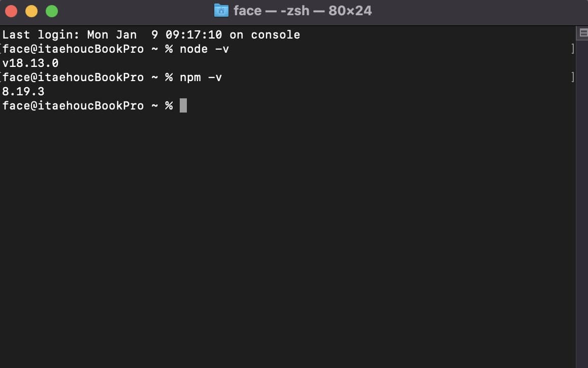

Node.js는 Chrome V8 JavaScript 엔진으로 빌드 된 JavaScript 런타임이다.
즉, 노드를 통해 다양한 자바스크립트 애플리케이션을 실행할 수 있으며, 서버를 실행하는데 제일 많이 사용된다.
Node.js는 JavaScript를 서버에서도 사용할 수 있도록 만든 프로그램이다.
Node.js는 서버사이트 스크립트 언어가 아니다. 프로그램(환경)이다.
Node.js는 웹서버와 같이 확장성 있는 네트워크 프로그램을 제작하기 위해 만들어졌다.
사용되는 언어로는 JavaScript를 활용하며, Non-blocking I/O와 단일 스레드 이벤트 루프를
통한 높은 처리 성능을 가지고 있는 것이 특징이다.
내장 HTTP 서버 라이브러리를 포함하고 있어 웹 서버에서 아파치 등의 별도 소프트웨어 없이 동작하는 것이 가능하며,
이를 통한 웹 서버의 동작에 있어 더 많은 통제에서 벗어나 여러 가지 기능을 가능하게 한다.
Node.js를 통해 웹어플리케이션은 더욱 발전하게 되었으며, 정적인 홈페이지 뿐만 아니라 쇼핑몰 티켓 예매사이트 등
데이터가 변해가는 사이트를 만들 수 있으며, 여러 개발자가 만든 프로그램과 게임을 웹상에서 구동시켜 핸드폰, PC 등
플랫폼의 제약에서 벗어나 어디든 상관없이 실행 가능하게 해준다.
Node.js를 사용하는 이유
Node.js를 사용하려면 먼저 JavaScript를 배워야한다.
Node.js는 JavaScript를 사용하기 위해 만들어진 것이기 때문이다.
JavaScript는 C/C++, Java와 같은 프로그래밍 언어이다.
하지만 이름에서 알 수 있듯 JavaScript는 독립적인 언어가 아닌 스크립트 언어이다.
스크립트 언어는 특정한 프로그램 안에서 동작하는 프로그램이기 때문에 웹 브라우저 프로그램 안에서만 동작을 한다.
웹 브라우저(크롬, 사파리, 익스플로러, 파이어폭스 등)가 없으면 사용할 수 없는 프로그램이다.
여기서 Node.js가 나오는 이유가 된다.
Node.js는 JavaScript를 웹 브라우저에서 독립시킨 것으로 Node.js를 설치하게 되면 터미널 프로그램(윈도우의 cmd, 맥의 terminal 등)에서
Node.js를 입력하여 브라우저 없이 바로 실행할 수 있다.
하지만 JavaScript에서 분리된 언어이기 때문에 문법은 같다.
이렇게 Node.js를 이용하여 웹 브라우저와 무관한 프로그램을 만들 수 있게 되었다.
중요한 것은 Node.js를 이용하여 서버를 만들 수 있다는 것이다.
이전까지 Server-Client 웹사이트를 만들 때 웹에서 표시되는 부분은 JavaScript를 사용하여 만들어야만 했으며,
서버는 Ruby, Java 등 다른 언어를 써서 만들었어야 했는데 마침내 한 가지 언어로 전체 웹 페이지를 만들 수 있게 된 것이다.
자바스크립트 런타임
런타임이란 특정 언어로 만든 프로그램을 실행할 수 있는 환경을 뜻한다.
따라서 노드는 자바스크립트 프로그램을 컴퓨터에서 실행할 수 있게 하는 자바스크립트 실행기이다.
특히 2008년 구글이 V8엔진을 사용하여 크롬을 출시했고 V8 엔진은 다른 자바스크립트 엔진과 달리 매우 빨라 라이언 달(Ryan Dahl)은
2009년 V8 엔진 기반의 노드 프로젝트를 시작하며 세상에 나왔다.
이벤트 기반 프로그래밍 (Event-Driven Programming)
노드는 V8과 더불어 libuv라는 라이브러리를 사용한다.
libuv 라이브러리는 노드의 특성인 이벤트 기반, 논 블로킹 I/O 모델을 구현하고 있다. 이벤트 기반(Event-driven)이란 이벤트가 발생할 때 미리 지정해둔 작업을 수행하는 방식을 의미한다.
즉, 이벤트 기반 시스템에서는 특정 이벤트가 발생할 때 무엇을 할지 미리 등록해두고, 이를 이벤트 리스너에 콜백함수로 등록한다.
이후 이벤트가 발생하면 리스너에 등록해둔 콜백함수를 호출하며, 이벤트가 끝난 후 노드는 다음 이벤트가 발생할 때까지 대기한다.
이벤트 루프
이벤트 루프(event loop)는 여러 이벤트가 동시에 발생했을 때 어떤 순서로 콜백함수를
호출할지를 이벤트 루프가 판단한다.
노드는 이벤트가 종료될 때까지 이벤트 처리를 위한 작업을 반복하며 루프(loop)라고 부른다.

블로킹(Blocking)과 논블로킹(Non-Blocking)
블로킹(Blocking) : 자신의 수행결과가 끝날 때까지 제어권을 갖고 있는 것 논블로킹(Non-Blocking) : 자신이 호출되었을 때 제어권을 자신을 호출한 쪽으로 넘기고 자신을 호출한
쪽에서 다른 일을 할 수 있도록 하는 것
논 블로킹 I/O
이벤트 루프를 잘 활용하면 오래 걸리는 작업을 효율적으로 처리할 수 있다.
작업에는 두 가지 종류가 있는데 동시에 실행될 수 있는 작업과 동시에 실행될 수 없는 작업이다.
특히 파일 시스템 접근, 네트워크를 통한 요청 작업은 입력(input)/출력(output)의 일종이며,
이러한 작업을 할 때 노드는 비동기 방식으로 블로킹을 만들지 않게 끔 논 블로킹 처리한다. 비동기란 이전 작업이 완료될 때까지 대기하지 않고 동시에 작업을 수행한다.
반대로 동기는 이전 작업이 끝나야만 다음 작업을 수행한다.
자세하게 풀어서 이야기하면 함수 호출 시 당장 실행하는 것이 아니라 (동기 => 블로킹) 일단 어느 곳에 쌓아 놓고
동시에 요청을 처리하고 (비동기 => 논 블로킹) 요청이 완료된 순서대로 처리(스택 이용)한다는 말이다.
동기(Synchronous) VS 비동기(Asynchronous)

동기 (Synchronous)
현재 작업의 응답이 끝남과 동시에 다음 작업이 요청된다.
함수를 호출하는 곳에서 호출되는 함수가 결과를 반환할 때까지 기다린다.
작업 완료 여부를 계속해서 확인한다.
비동기 (Asynchronous)
현재 작업의 응답이 끝나지 않은 상태에서 다음 작업이 요청된다.
함수를 호출하는 곳에서 결과를 기다리지 않고, 다른 함수(callback)에서 기다린다.
작업 완료 여부를 확인하지 않는다.
동기적 처리 예시 (Synchronous)
아래의 코드예시처럼 코드가 위에서부터 아래로 내려오면서 하나가 끝나면 다음 코드가 실행되는 방식을
동기적 처리(Synchronous)라고 한다.
비동기적 처리 예시 (Asynchronous)
아래의 코드 예시에서 setTimeout() 메서드의 지연시간이 0이기 때문에 1st, 2nd, 4rd
순으로 결과값이 찍힐것이라 예상했지만, setTimeout() 메서드를 사용한 결과, 1st, 3rd, 2nd 순으로 결과값이 찍혔다.
이는 setTimeout() 메서드가 비동기적 API이기 때문이다.
위의 코드를 컴퓨터의 입장에서 해석해보면 다음과 같다.
1. 첫번째 줄에서 console.log("1st")를 만나고 console에 1st를 찍는다.
2. 두번째 줄에서 setTimeout() 메서드를 만나고, 해당 메서드가 비동기적 메서드이기 때문에 이를 처리하는 다른 프로그램에 맡긴다.
3. 그러고 나서 곧바로 console.log("3rd")를 console에 찍는다.
4. setTimeout() 메서드를 처리하는 프로그램은 비동기적 API를 제외한 모든 코드가 실행된 이후 결과를 console에 찍는다.
비동기적 코드의 실행 결과는 동기적 코드가 전부 실행되고나서 값을 반환한다.
동기는 디자인이 비동기보다 간단하고 직관적일수 있지만 결과가 주어질 때까지 아무것도 못하고 대기해야하는 문제가 있다.
비동기는 동기보다 복잡하지만 결과가 주어지는데 시간이 걸려도 그 시간동안 다른 작업을 할 수 있어서 보다 효율적일 수 있다.
싱글 스레드 (Single Thread)
이벤트 기반, 논블로킹 모델과 더불어 노드를 설명하는 키워드 중 하나는 싱글 스레드(Single Thread)이다.
자바스크립트 코드는 동시에 실행될 수 없는데 그 이유는 노드가 싱글 스레드 기반이기 때문이다.
프로세스 : 운영체제에서 할당하는 작업의 단위이다. 노드나 웹 브라우저같은 프로그램은 개별적은 프로세스이다. 프로세스 간에는 메모리 등의 자원을 공유하지 않는다. 스레드 : 스레드는 프로세스 내에서 실행되는 흐름의 단위이다. 프로세스는 스레드를 여러 개 생성해 여러 작업을 동시에 처리할 수 있다.
멀티 스레드(Multi Thread)는 스레드 풀에서 실행의 요청만큼 스레드를 매칭하여 작업을 수행한다. 언뜻 들으면 멀티 스레드가 싱글 스레드보다 훨씬 좋아보이지만,
멀티 스레드는 효율성 측면에서 큰 단점을 갖고 있다. 스레드 풀에 스레드가 늘어날수록 CPU 비용을 소모하고, 만약 요청이 적다면 놀고있는 스레드가 생기기 때문이다.
Node.js는 싱글 스레드, 논블로킹 모델로 싱글 스레드가 혼자서 일을 처리하지만, 들어오는 요청 순서가 아닌
논블로킹 방식으로 이전 작업이 완료될 때까지 대기하지 않고 다음 작업을 수행한다.
Node.js의 특성
노드는 기본적으로 싱글 스레드, 논블로킹 모델을 채용하므로 I/O 요청이 많이 발생하면 노드를 서버로 사용하는 것이 좋다.
하지만 노드는 CPU 부하가 큰 작업에는 적합하지 않다.
우리가 작성하는 코드는 모두 스레드 하나에서 처리되기 때문에 코드가 CPU 연산을 많이 요구하면 스레드 하나가
혼자서 감당하기 어렵다.
즉, 개수는 많지만 크기는 작은 데이터를 실시간으로 주고받는데 노드는 적합하다. 예를 들어, 네트워크나 데이터베이스, 디스크 작업같은
I/O에 특화되어있다. 실시간 채팅 어플리케이션, 주식 차트도 포함된다.
결론적으로 노드의 장점은 첫째, 멀티 스레드 방식에 비해 적은 컴퓨터 자원을 사용한다. 둘째, I/O 작업이 많은 서버로 적합하다.
셋째, 웹 서버가 내장되어 있어 별도의 웹서버를 설치할 필요가 없다. 넷째, 자바스크립트를 사용하기 때문에 JSON 형식과 쉽게 호환된다.
- LTS 버전 (Long Term Support Version)
LTS는 기업을 위한 버전이다. 해당 버전은 서버를 안정적으로 운영해야 하는 경우에 선택을 하며 최신 기능을
사용하지는 못하지만 안정성과 신뢰도 향상을 위해 사용한다.
- 현재 버전
가장 최신으로 업데이트 된 버전을 말하며, 최신 기능을 모두 사용할 수 있으나, 예상치 못 한 에러가 발생하는
경우가 있어 학습 목적이나 최신 기능을 실험적으로 사용해볼 때 사용한다.

3. 다운받은 설치파일을 클릭해, Node.js 설치를 진행한다.

- node.js runtime : Node.js 런타임 본체 - corepack manager : Corepack 패키지 관리자 / npm, yarn 등의 패키지 관리자의 여러 버전 설치 및 사용여부 지정 - node package manager(npm) : 노드 패키지 관리자 - online documentation shortcuts : 온라인 문서 바로가기 - Add to PATH : 시스템 PATH 환경 변수에 Node.js 추가
Tools for Native Modules
- Automatically install (자동 설치)
: npm 모듈 중에 컴파일이 필요한 것이 있다면 자동으로 설치할 지 여부를 물어보는 것이다.
(파이썬이나 비쥬얼 빌드 도구와 같이 필요한 도구 자동 설치 여부)
4. 추가 도구 설치 화면으로 이동되면 아무 키나 누른다.
위의 설치 과정 중 Tools for Native Modules 단계에서 Automatically install (자동 설치) 체크를 했기 때문에
나타나는 창으로 "추가 도구 설치 화면"이다.
아무 키나 눌러주면 된다.
5. 명령 프롬프트(MAC => terminal.app / WINDOWS => cmd.exe) 창에서 정상 설치 여부를 확인한다.

node -v : 노드 버전 체크 명령어 npm -v : 노드 패키지 관리자(npm) 버전 체크 명령어
Node.js 명령어
새 어플리케이션을 생성하는게 아닌 기존 어플리케이션을 수정할 때 간혹 node와 npm 버전이 맞지 않아 실행이 되지 않는 경우가 있다.
노드 버전을 LTS 버전으로 다운그레이드 하거나, 특정 버전으로 변경해서 해결하는 등, 노드 실행과 관련하여 자주 사용하는 명령어들은 다음과 같다.
설치 관련 명령어
init : package.json을 생성하는 명령어
package.json은 의존성 패키지(Package Dependencies)를 관리할 때 사용한다.
의존성 패키지(Package Dependencies)란? 패키지를 실행하기 위해 다른 패키지나 라이브러리가 필요한 경우 의존성 패키지라고 한다.
예를 들어, slick-slider와 같은 플러그인을 사용하기 위해 jQuery가 반드시 필요하기 때문에,
slick-slider는 의존성 패키지로 분류할 수 있다.
install : 패키지를 생성하는 명령어
Node.js의 모듈인 패키지를 설치할 때 사용한다. package.json도 같이 설치되기 때문에 특별한 이유가 있지 않으면 init은 잘 사용되지 않는다.
패키지(Package)란?
Node.js에서 사용할 수 있게 저장해둔 모듈을 패키지라고 한다.
노드 패키지 매니저(NPM)란?
Node.js에서 사용할 수 있는 모듈을 패키지 형태로 저장해 둔 패키지 생태계이자 현존하는 가장 큰 오픈소스 라이브러리입니다. 직접 개발한 모듈 뿐 아니라
다른 사용자들이 미리 만들어 놓은 모듈을 NPM에서 간편하게 다운로드 받아 사용할 수 있다는 점이 특징이다.
uninstall : 패키지를 삭제하는 명령어
Node.js 버전 확인
n 플러그인 설치
n은 node의 버전을 관리해주는 플러그인이다. 해당 플러그인이 있으면 노드 버전을 변경할 때, 해당 노드 삭제가 아닌 사용할 버전 선택이라는 간편함이 있으니 설치해준다.
버전 설치 & 관리
node 버전 변경하기
node의 버전이 여러개일 경우, 간단하게 n을 입력하고 사용할 버전을 선택한 후, 엔터를 입력하면 된다.
특정 버전 삭제 / 현재 버전 외 전체 버전 삭제
아래 명령어를 통해 특정 버전 또는 현재 선택된 버전 외 모든 버전을 삭제할 수 있다.
실행 관련 명령어
run : package.json에 등록된 script를 실행할 때 사용하는 명령어
package.json에 지정된 start, test 명령어 이외의 다른 명령어를 실행할 때 사용한다.
test : package.json의 bin 혹은 test 명령어에 저장된 패키지를 실행하는 명령어
Test Driven Development(TDD)를 할 때 필수로 사용하는 명령어이다.
테스트 주도 개발(Test Driven Development)이란?
반복 테스트를 이용해 작은 단위의 테스트 케이스를 작성하고 이를 통과하는 코드를 추가하는 과정을 반복하여 개발하는 소프트웨어 개발 방법론이다.
로그인 관련 명령어
adduser : npm에 회원가입하는 명령어
개발한 모듈을 패키지화하여 배포할 때 사용한다. npm 명령어를 통하지 않아도 npm 홈페이지를 통해 회원가입이 가능하다.
login : 로그인을 할 때 사용하는 명령어
logout : 로그아웃 할 때 사용하는 명령어
배포 관련 명령어
deploy : gh-pages등에 연결된 패키지를 배포할 때 사용하는 명령어
publish : 패키지를 직접 배포하거나 버전 업그레이드를 할 때 사용하는 명령어
.gitignore 또는 .npmignore 파일에 적혀있지 않은 파일들은 npm 저장소에 업로드되어 출시된다.
이 명령어롤 사용하기 위해서는 반드시 로그인한 상태여야 한다.
deprecate : 이미 낸 패키지를 사용하지 않도록 권고하는 명령어
자신이 출시한 패키지에 치명적인 버그가 발견된다면 이 명령어를 사용해서 다른 사람들이게 사용하지 말도록 말해준다.
unpublish : 배포한 패키지를 다시 비배포 상태로 돌리는 명령어
사용이 불가능한 정도의 심각한 버그가 아니면 deprecate 하는게 권장된다.
이미 패키지를 다운로드한 사람들에게 피해를 입힐 수도 있기 때문이다.
version : 패키지의 버전 업데이트를 할 때 사용하는 명령어
실행 관련 명령어
start : package.json의 scripts에 있는 start 명령어를 실행하는 명령어
만약 start 명령어를 따로 설정하지 않았다면 node server.js가 실행된다
stop : 실행중인 start 명령어를 중지하는 명령어
명령어를 입력해도 되고 키보드의 ctrl(cmd) + c를 사용해 중지해도 된다.
restart : 중지된 start 명령어를 다시 실행하는 명령어
root : node_modules의 위치를 알려주는 명령어
outdated : 오래된 패키지가 있는지 알려주는 명령어
오래되었고 package.json에 적어둔 버전 범위와 일치하면 빨간색, 버전 범위와
일치하지 않으면 노란색으로 표시된다.
dedupe : 중복된 패키지들을 정리할 때 사용하는 명령어
cache : npm 내의 cache를 보여주는 명령어
만약 npm에 문제가 생기거나 실행이 안될 때 가장 먼저 하는게 cache를 지우는 것이다.
build : 어플리케이션을 최적화하는 명령어
package.json의 scripts 안의 build 명령어 내부에 최적화된
프로덕션 버전 어플리케이션을 추가
npm이 실행이 안될 때 cache clean을 한 후 rebuild로 재설치한다.